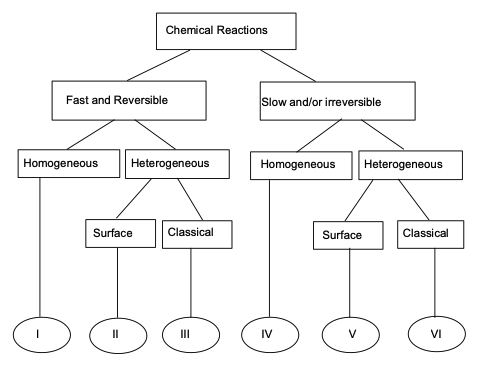
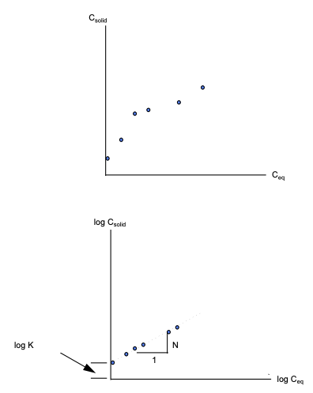
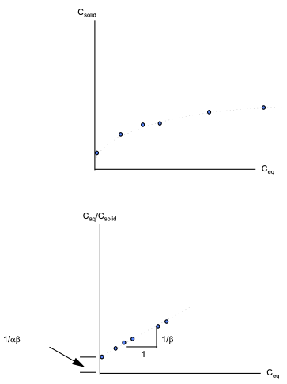

Reactive Transport#
Reactive constituent transport in groundwater refers to the complex movement and transformation of dissolved substances as they migrate through the subsurface environment. This phenomenon is characterized by the interaction of these constituents with the surrounding geological materials and the potential for chemical reactions to occur, altering the composition of the groundwater. It plays a critical role in environmental processes, as it encompasses the transport of contaminants, nutrients, and other solutes, often involving reactions such as sorption, degradation, precipitation, and dissolution. Understanding reactive constituent transport is essential for managing and mitigating groundwater contamination, optimizing groundwater remediation strategies, and safeguarding the quality of groundwater resources.
Course Website
%%html
<style> table {margin-left: 0 !important;} </style>
Readings#
Videos#
Reactions#
In groundwater systems, chemical reactions play a crucial role in determining the fate and transport of contaminants. These reactions influence how contaminants move, transform, and potentially degrade as they interact with water, soil, and rock matrices. The nature of these reactions—whether fast or slow, reversible or irreversible, heterogeneous or homogeneous—greatly affects contaminant migration and remediation efforts.
The figure below is a classification of different kinds of reactions (CITE source)

Fast and Slow Reactions#
Chemical reactions in groundwater transport can occur at varying speeds. Fast reactions typically involve the instantaneous equilibrium between chemical species, such as the dissociation of weak acids or the sorption of ions onto mineral surfaces. These reactions are often assumed to occur almost instantaneously relative to groundwater flow, allowing the system to reach equilibrium quickly. For example, carbonate equilibria or ion exchange processes often fall into this category.
On the other hand, slow reactions occur over longer timescales and may limit the overall transport of contaminants. Slow reactions often involve complex chemical transformations, such as the biodegradation of organic contaminants or the precipitation of minerals from solution. In these cases, the reaction kinetics play a critical role in the persistence of pollutants. For example, the biodegradation of hydrocarbons in groundwater often proceeds at a slow rate, influencing long-term contaminant plumes.
Reversible and Irreversible Reactions#
Reversible reactions in groundwater transport involve chemical processes that can proceed in both forward and backward directions. Examples include adsorption-desorption processes, where contaminants attach to and detach from soil particles depending on environmental conditions like pH and ion concentration. These reactions are typically described by equilibrium isotherms, such as the Freundlich or Langmuir models, which allow the contaminant to move back into solution under changing conditions.
In contrast, irreversible reactions proceed in one direction only, leading to permanent transformation or immobilization of contaminants. A common example is the precipitation of metals, such as when dissolved iron reacts with oxygen to form insoluble iron oxides. Irreversible reactions are significant for remediation strategies, as they can permanently remove contaminants from the mobile phase in groundwater, preventing further transport.
Homogeneous and Heterogeneous Reactions#
Homogeneous reactions occur uniformly throughout the aqueous phase and involve dissolved chemical species. For instance, the hydrolysis of an organic contaminant or the dissolution of carbon dioxide in water are homogeneous reactions, as the reaction takes place in a single phase (the water). These reactions are typically modeled using simple kinetic expressions since they involve species that are fully mixed within the groundwater.
In contrast, heterogeneous reactions involve more than one phase, typically occurring at the interface between solid and liquid phases. Examples include adsorption onto soil particles, surface-catalyzed redox reactions, or precipitation and dissolution of minerals. These reactions are spatially localized and depend on surface properties, making them more complex to model. For example, the reduction of nitrate by iron in groundwater is a heterogeneous reaction that occurs at mineral surfaces, with rates dependent on both the surface area available and the chemical composition of the solid phase.
Surface and Classical Reactions#
In groundwater transport, surface reactions differ from classical (bulk) reactions in how they occur and their controlling factors. Surface reactions take place at the interface between solid and liquid phases, such as the adsorption of contaminants onto soil or mineral surfaces, or catalysis of redox reactions on solid substrates. These reactions depend heavily on surface area, mineral composition, and the specific surface chemistry of the material. In contrast, classical reactions occur uniformly throughout the bulk aqueous phase, involving only dissolved species. Examples include hydrolysis or neutralization reactions that occur within the groundwater itself. Surface reactions tend to be slower and more complex, requiring consideration of solid-liquid interactions, while classical reactions can often be described with simpler kinetic models focused solely on chemical concentrations in solution. Surface reactions play a key role in contaminant immobilization and transformation, making them critical for understanding contaminant fate in heterogeneous subsurface environments.
Some surface reactions important in groundwater include:
Adsorbtion - solute clings to surface due to various attractive forces - usually electrostatic.
Ion-Exchange - ions are attracted to mineral surfaces substitute themselves into the mineral structure. Zeolites are examples of natural ion-exchange materials.
Chemisorption - solute is incorporated into a sediment by chemical reaction.
Absorbtion - solute diffuses into solid matrix and clings to interior surfaces. (Notice the “b” replaces the “d” in adsorbtion)
All these reactions are controlled to a great extent by solution pH, EH, and salinity.
Adsorbtion#
Reactions between solutes and surfaces play an important role in various environmental and geological processes, particularly in the context of groundwater and subsurface systems. These reactions, often referred to as surface reactions or sorption processes, involve the interaction of solutes with the surfaces of solid materials, such as minerals, sediments, or aquifer grains. They can significantly influence the fate and transport of solutes in the subsurface environment.
For instance, in groundwater contamination scenarios, sorption processes can either attenuate or enhance the mobility of contaminants, depending on whether the reactions involve adsorption (binding of contaminants to surfaces) or desorption (release of contaminants from surfaces). These reactions can determine whether contaminants are retained within the subsurface, reducing their potential impact on groundwater quality, or if they are transported further, posing a greater risk to the environment.
Furthermore, surface reactions are crucial in natural processes such as the cycling of nutrients (e.g., phosphate or nitrate) within aquifer systems, affecting nutrient availability to ecosystems and influencing water quality.
Partitioning#
When water containing a constituient with concentration \(C_i\) equilibrates with the surrounding solid phase (porous media) the mass is said to be partitioned between the liquid (solute) and solid phase. A partition relationship is something like:
where:
\(C_{solid}\) is the equilibrium concentration of the constituient in/on the solid phase (e.g. units of mg/g)
\(C_i\) initial liquid phase concentration of the constituient
\(C_{eq}\) is the equilibrium liquid phase concentration
\(V_{solute}\) is the volume of solution (in the pore space of interest)
\(m_{solid}\) is the mass of the solid phase (in the porous space of interest)
A collection of these partitions for different equilibrium concentrations (all obtained at the same temperature) is called an isotherm.
Sorbtion Isotherms#
Sorbtion Isotherms are typically arrived at by some version of the cartoon below

Samples with a known water volume (or mass) and known concentration of solute are prepared. This concentration is \(C_0\)
Different masses of the same solids are added to each of the samples.
The jars are vigorously agitated for some time (usually 24 hours).
The concentration in each jar is measured. These concentrations are \(C_{eq}\)
The amount of mass that has transferred to the solid in the i-th sample is calculated from: \( mass_{\text{liquid-solid}} (i)= [C_0(i)-C_{eq}(i)] \cdot V_{\text{liquid}}\)
The solid phase concnetration is computed from: \(C_{solid} = mass_{\text{liquid-solid}} (i) / mass_{solid} (i)\)
The plot of \(C_{solid}\) versus \(C_{eq}\) is called the equilibrium adsorbtion isotherm.
If the procedure is done using different agitation time, then kinetic effects can be studied, and the resulting contour (surface) plot would be called a kinetic adsorbtion isotherm. Kinetic isotherms are probably uncommon.
Once the isotherm data are obtained then they are fit to one of several models for subsequent use.
Linear Isotherm#
If the data exhibits a straight-line relationship when plotted on arithmetic graph paper, then the isotherm is called a linear equilibrium isotherm.

If, in addition to the linear relationship, the system assumes new equilibrium conditions very fast relative to the transport processes involved, then the isotherm is called an instantaneous linear equilibrium isotherm.
The slope of the isotherm is called the distribution coefficient, \(K_d\).
The equation of the isotherm is: \(C_{solid} = K_d C_{eq}\)
Expressed as a rate equation: \( \frac{dC_{solid}}{dt} = K_d \frac{dC_{eq}}{dt}\)
Freundlich Isotherm#
If the data exhibits a straight-line relationship when plotted on log-log graph paper, then the isotherm is called a Freundlich Isotherm.

If, in addition to the log-log linear relationship, the system assumes new equilibrium conditions very fast relative to the transport processes involved, then the isotherm is called an instantaneous Freundlich equilibrium isotherm.
The slope of the isotherm is called Freundlich exponent, N, and the intercept is called the Freundlich distribution coefficient, K.
The equation of the isotherm is : \(C_{solid} = K C_{eq}^N\)
Expressed as a rate equation: \( \frac{dC_{solid}}{dt} = KN C_{eq}^{N-1} \frac{dC_{eq}}{dt}\)
Langmuir Isotherm#
If the data exhibits a straight-line relationship when \(\frac{C_{eq}}{C_{solid}}\) is plotted versus \(C_{eq}\) on arithmetic paper, then the isotherm is called a Langmuir Isotherm.

If, in addition to the linear relationship of \(\frac{C_{eq}}{C_{solid}}\) versus \(C_{eq}\), the system assumes new equilibrium conditions very fast relative to the transport processes involved, then the isotherm is called an instantaneous Langmuir equilibrium isotherm.
The equation of the isotherm is:
where \(\alpha\) is an adsorbtion constant related to binding energy and \(\beta\) is the maximum amount of solute that can be adsorbed.
To express as a rate equation rearrange as
Incorporation into ADE#
The adsorbtion/desorbtion reaction(s) are incorporated into the transport equation as a source/sink term:
If the linear isotherm applies, and the reaction is considered fast a simple substitution of the \(K_d\) gives
And renaming the term \(1 + \frac{\rho_b}{n} K_d = R\) (the retardation factor) the result is
Conceptually, the retardation factor (retardation coefficient) is a fundamental parameter in hydrogeology and groundwater transport modeling. It represents the ratio of the average groundwater velocity to the average solute velocity within an aquifer. More precisely, it quantifies how much slower a solute moves through the subsurface due to interactions with the solid materials (e.g., soil or rock) and the fluid (groundwater) in the aquifer.
The retardation factor is a critical concept when assessing the transport of contaminants in groundwater. When the retardation factor is greater than one, it indicates that the solute appears retarded or delayed in its movement through the aquifer due to sorption or other reactive processes, reducing its mobility. On the other hand, when the retardation factor is less than one (colloids exhibit such behavior - its called hydrodynamic chromatography, it also occurs in low ionic strength solutions or with charged ions of same charge as the solid surface), it suggests that the solute appears moves more quickly than the groundwater, potentially increasing its transport distance.
Important
Understanding the retardation factor is essential for predicting the movement and dispersion of contaminants, designing effective groundwater remediation strategies, and assessing the risk of groundwater contamination. It plays a pivotal role in characterizing the complex interplay between solute transport and subsurface geochemistry.
Partioning of Organic Compounds#
Organic compounds partitioning is strongly influenced by the fraction of organic carbon in the solid phase as opposed to the total mass of solids themselves.
A working model for estimating partitioning is
where
\(K_d\) is a linear isotherm slope (i.e. we use the linear model)
\(f_{oc}\) is the fraction of organic carbon in the solid phase (A portion of the dried aquifer is burned at high temperatures (usually around 550°C) in a specialized instrument called a muffle furnace. During combustion, the organic carbon in the sample is oxidized and converted into carbon dioxide. The evolved CO2 is then captured and quantified using gas chromatography or infrared gas analyzers. The fraction of organic carbon in the soil can be determined by measuring the weight of the CO2 produced and applying stoichiometric relationships.
\(k_{oc}\) the organic-carbon partition coefficient, usually estimated from the \(k_{ow}\) octonal-water partition coefficient for the constituient of interest (in the 1990s it was obtained by liquid-liquid extractions, but less wasteful methods are likely in use today). Many compounds are tabulated Octanol-Water Partition Coefficients of Simple Organic Compounds (1988) NIST or one can use Table 7.2 in the textbook to make a good guess.
Volatization#
Volatization is another significant process in the fate of contaminants in groundwater. It refers to the escape or release of certain chemical compounds from the aqueous phase (groundwater) into the vapor phase (air) when there is an interface between the two. Volatization occurs predominantly with volatile organic compounds (VOCs), such as certain solvents and gasoline components, which have a tendency to evaporate. This process can lead to the migration of contaminants from groundwater into the air, posing risks to human health through inhalation exposure.
Structurally it is a lot like an adsorbtion (mass transfer) process. A working partition model is
where
\([C]_{aq}\) is the concentration in the aqueous phase of the volatile compound (intentionally shown as a molar concentration)
\(H_c\) is Henry’s law for the compound (kind of Raoult’s law extended throughout the domain
\(P_c\) is the partial pressure of the compound in the gas phase.

Henry’s Law is a fundamental principle that quantifies the relationship between the concentration of a volatile compound in the gas phase and its concentration in the water phase at equilibrium. It states that the concentration of a gas in the air is directly proportional to its concentration in the water and is governed by a proportionality constant called Henry’s constant. Henry’s Law is valuable in predicting the volatilization of contaminants from groundwater, as it helps estimate the extent to which a substance will partition into the vapor phase based on its solubility in water.
Note
Raoult’s law and Henry’s law are two fundamental principles in physical chemistry that describe the behavior of solutes in solutions, particularly when it comes to the interaction between solutes and the vapor phase. While these laws are similar in some respects, they apply to different phases of matter and have distinct applications.
Raoult’s Law:
Phase: Raoult’s law primarily applies to solutions of non-electrolyte solutes (molecules that do not ionize) in a liquid phase.
Description: Raoult’s law describes the vapor pressure of an ideal solution, where the partial vapor pressure of each component in the solution is directly proportional to its mole fraction in the liquid phase.
Mathematical Form: For a binary ideal solution, Raoult’s law is expressed as \(P_i = x_i * P_i^*\) , where \(P_i\) is the partial vapor pressure of component \(i\), \(x_i\) is the mole fraction of component \(i\) in the liquid phase, and \(P_i^*\) is the vapor pressure of pure component \(i\).
Application: Raoult’s law is often used to describe the behavior of volatile components in solutions, such as ideal gas mixtures and non-ideal solutions at low concentrations.
Henry’s Law:
Phase: Henry’s law applies to the interaction between a solute and the gas (vapor) phase, typically in cases where the solute has low solubility in the liquid phase.
Description: Henry’s law states that the concentration of a gas dissolved in a liquid is directly proportional to the partial pressure of that gas above the liquid. It describes the solubility of gases in a liquid.
Mathematical Form: Henry’s law is expressed as \([C] = \frac{1}{H_c} * P\), where \([C]\) is the concentration of the dissolved gas, \(H_c\) is Henry’s constant (specific to each solute-solvent pair), and \(P\) is the partial pressure of the gas in contact with the liquid.
Application: Henry’s law is commonly used in environmental chemistry, particularly in the context of predicting the dissolution and volatilization of gases in natural waters, such as the transfer of gases between the atmosphere and surface waters.
In summary, Raoult’s law pertains to ideal solutions of non-electrolyte solutes in the liquid phase and describes the vapor pressure of components in the solution, while Henry’s law pertains to the solubility of gases in a liquid and relates the concentration of a gas dissolved in the liquid to its partial pressure in the gas phase. Both laws deal with the interaction between solutes and gases but in different phases and under different conditions.
Decay#
Exponential decay of constituents in groundwater describes the gradual reduction in the concentration of dissolved substances in groundwater over time due to natural attenuation processes such as radioactive decay, biodegredation, and hydrolysis. Typically, as groundwater flows through an aquifer, constituents such as contaminants or dissolved solutes may undergo degradation, or other reactive processes. These processes may follow exponential decay kinetics, where the rate of decrease in concentration is proportional to the remaining concentration. As a result, the concentration of constituents diminishes rapidly initially and then gradually approaches a stable, lower level over time. Understanding exponential decay in groundwater is critical for assessing the long-term behavior of contaminants, designing effective groundwater remediation strategies, and safeguarding the quality of groundwater resources.
1-st Order Decay#
First-order decay is a mathematical model used to describe the exponential decrease in the concentration of a substance over time. It is commonly applied in various fields, including chemistry, physics, biology, and environmental science, to represent processes such as radioactive decay, chemical reactions, and the natural attenuation of contaminants. The mathematics of first-order decay is defined by the following equation:
Where:
\(C(t)\) represents the concentration of the substance at time \(t\).
\(C_0\) is the initial concentration of the substance at \(t=0\).
\(\lambda\) is the first-order rate constant, which determines the rate of decay.
Key points about first-order decay:
Exponential Decrease: The concentration C(t)C(t) decreases exponentially over time. This means that the rate of decrease is proportional to the current concentration, resulting in a continuous, smooth curve that approaches zero but never reaches it completely.
Rate Constant (\(\lambda\)): The rate constant \(\lambda\) is a positive constant that characterizes the speed of the decay process. It is unique to each specific decay or reaction and is often expressed in units of reciprocal time (e.g., per day, per year). A larger \(\lambda\) value indicates a faster decay rate.
Half-Life: The half-life (\(t_{1/2}\)) is a valuable parameter associated with first-order decay. It represents the time it takes for the concentration to decrease to half of its initial value (\(\frac{C_0}{2}\)). The relationship between the rate constant and half-life is given by \(t_{1/2}=0.693 \lambda\).
Independence of Concentration: The rate of decay is independent of the initial concentration \(C_0\). This means that substances undergoing first-order decay will always decrease by the same proportion in a given time interval, regardless of their initial concentrations.
Hydrolysis#
Hydrolysis is a chemical reaction in the fate and transport of contaminants in groundwater. It involves the breakdown of certain chemical compounds when they come into contact with water molecules. In the context of groundwater contaminants, hydrolysis can transform hazardous substances into less harmful or more easily degradable forms. This reaction can alter the chemical composition and reactivity of contaminants, affecting their persistence in the subsurface environment. Understanding the occurrence and rate of hydrolysis reactions is crucial for predicting the behavior and potential risks associated with groundwater contaminants, especially for compounds like pesticides and industrial chemicals that are prone to hydrolytic degradation. Contaminant hydrolysis can be a key factor in groundwater remediation strategies and in the assessment of long-term environmental impacts.
While temperature sensitive hydrolysis is typically described using a first-order decay model
Electron Transfer#
Electron transfer, often referred to as oxidation-reduction (redox) reactions, plays a pivotal role in the fate and transformation of contaminants in groundwater. These reactions involve the exchange of electrons between different chemical species, leading to changes in the oxidation states of the participating compounds. In the context of groundwater contaminants, redox reactions can either facilitate the degradation or transformation of pollutants or, conversely, promote their persistence and mobility. For instance, certain contaminants may undergo reduction reactions, gaining electrons and becoming less toxic or mobile. Conversely, oxidation reactions can render contaminants more mobile or transform them into more harmful forms. Understanding the redox chemistry of groundwater contaminants is crucial for assessing the potential risks, remediation strategies, and long-term behavior of these substances in the subsurface environment. It is a complex yet fundamental aspect of contaminant fate in groundwater systems.
Like hydrolysis electron transfer processes are typically modeled using a first-order decay model.
Incorporation into ADE#
1-st order decay is incorporated into the transport equation as another source/sink term:
Note
Obviously other reactions can be included - they simply appear as a source/sink term. Whether they manifest as simply as the terms herein depends on the nature of the process.
To modify our existing analytical solutions for 1-st order decay of the species, and a linear equilibrium isotherm (e.g. a constant \(R\)) we simply have:
We can increase dimensionality as needed (e.g for 3 spatial dimensions):
We can reuse our already built analytical solutions either by defining parameters as
\(D^*_{i} = \frac{D^~_{i}}{R}\)
\(v^*_{i} = \frac{v^~_{i}}{R}\)
and use our existing solutions
1D Constant Source, Retardation, Decaying Species#
For example a 1D prototype function for a constant source from Wexler, 1989 is:

#
# prototype decaying species function
#
def c1dadrd(c_source,space,time,dispersion,velocity,retardation,decay):
from math import sqrt,erf,erfc,exp # get special math functions
dee = dispersion/retardation
vee = velocity/retardation
uuu = (vee**2 + 4.0*decay*dee)
uuu = sqrt(uuu)
arg1 = (space*(vee-uuu))/(2.0*dee)
arg2 = (space - uuu*time)/(2.0*sqrt(dee*time))
arg3 = (space*(vee+uuu))/(2.0*dee)
arg4 = (space + uuu*time)/(2.0*sqrt(dee*time))
temp1 = c_source/2.0
temp2 = exp(arg1)
temp3 = erfc(arg2)
temp4 = exp(arg3)
temp5 = erfc(arg4)
c1dadrd = temp1*(temp2*temp3+temp4*temp5)
return c1dadrd
#
# example inputs
#
c_source = 1000.0 # source concentration
space = 100. # how far in X-direction to extend the plot
time = 50. # time since release
dispersion = 1.0 # dispersion coefficient
velocity = 1.0 # pore velocity
retardation = 1.0
decay = 0.00001
#
# forward define and initialize vectors for a profile plot
#
how_many_points = 50
deltax = space/how_many_points
x = [i*deltax for i in range(how_many_points)] # constructor notation
c = [0.0 for i in range(how_many_points)] # constructor notation
#
# build the profile predictions
#
for i in range(0,how_many_points,1):
c[i] = c1dadrd(c_source,x[i],time,dispersion,velocity,retardation,decay)
#
# Import graphics routines for picture making
#
from matplotlib import pyplot as plt
#
# Build and Render the Plot
#
plt.plot(x,c, color='red', linestyle = 'solid') # make the plot object
plt.title(" Concentration Profile \n Time: " + repr(time) + " time units \n" + " Dispersion: " + repr(dispersion) + " length^2/time units \n" + " Velocity: " + repr(velocity) + " length/time units \n") # caption the plot object
plt.xlabel(" Distance from Source ") # label x-axis
plt.ylabel(" Concentration ") # label y-axis
#plt.savefig("ogatabanksplot.png") # optional generates just a plot for embedding into a report
plt.show() # plot to stdio -- has to be last call as it kills prior objects
plt.close('all') # needed when plt.show call not invoked, optional here
#sys.exit() # used to elegant exit for CGI-BIN use
1D Exponentially decaying source zone, decaying species#
We can also implement the concepts of the source zone itself decaying, employing for example a solution by Marino 1974 our model is:

Note
I have assumed the source decay rate can be different than the species rate, one would need to re-read the original work to determine if that is a correct assumption - given that the solution is a convolution of infinite point sources decaying exponentially at some rate that could concievable by different than the species decay rate the assumption is probably fine.
#
# prototype decaying sourze zone function
#
def c1dadrdsrd(c_source,space,time,dispersion,velocity,retardation,decay,source_decay):
from math import sqrt,erf,erfc,exp # get special math functions
dee = dispersion/retardation
vee = velocity/retardation
uuu = (vee**2 + 4.0*decay*dee)
uuu = sqrt(uuu)
arg1 = (space*(vee-uuu))/(2.0*dee)
arg2 = (space - uuu*time)/(2.0*sqrt(dee*time))
arg3 = (space*(vee+uuu))/(2.0*dee)
arg4 = (space + uuu*time)/(2.0*sqrt(dee*time))
temp0 = exp(-source_decay*time)
temp1 = c_source/2.0
temp2 = exp(arg1)
temp3 = erfc(arg2)
temp4 = exp(arg3)
temp5 = erfc(arg4)
c1dadrdsrd = temp0*temp1*(temp2*temp3+temp4*temp5)
return c1dadrdsrd
Here’s a sample profile plot
#
# example inputs
#
c_source = 1000.0 # source concentration
space = 100. # how far in X-direction to extend the plot
time = 50. # time since release
dispersion = 1.0 # dispersion coefficient
velocity = 1.0 # pore velocity
retardation = 1.0
decay = 0.001 # species decay rate
decay_s = 0.01 # source zone decay rate (e.g. washout rate)
#
# forward define and initialize vectors for a profile plot
#
how_many_points = 50
deltax = space/how_many_points
x = [i*deltax for i in range(how_many_points)] # constructor notation
c = [0.0 for i in range(how_many_points)] # constructor notation
#
# build the profile predictions
#
for i in range(0,how_many_points,1):
c[i] = c1dadrdsrd(c_source,x[i],time,dispersion,velocity,retardation,decay,decay_s)
#
# Import graphics routines for picture making
#
from matplotlib import pyplot as plt
#
# Build and Render the Plot
#
plt.plot(x,c, color='red', linestyle = 'solid') # make the plot object
plt.title(" Concentration Profile \n Time: " + repr(time) + " time units \n" + " Dispersion: " + repr(dispersion) + " length^2/time units \n" + " Velocity: " + repr(velocity) + " length/time units \n") # caption the plot object
plt.xlabel(" Distance from Source ") # label x-axis
plt.ylabel(" Concentration ") # label y-axis
#plt.savefig("ogatabanksplot.png") # optional generates just a plot for embedding into a report
plt.show() # plot to stdio -- has to be last call as it kills prior objects
plt.close('all') # needed when plt.show call not invoked, optional here
#sys.exit() # used to elegant exit for CGI-BIN use
Application of Domenico and Robbin’s methodology to extend dimensionality would be reasonable (and is essentially the approach taken by Domenico 1987 that appears in your book as equation 6.33)